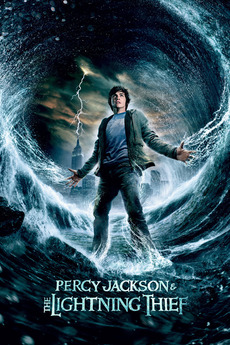
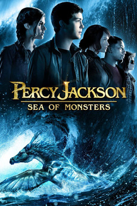
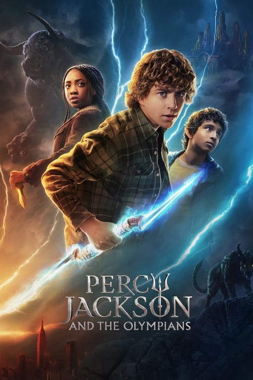

Nessa página você irá encontrar informações as adaptações cinematográficas e para TV do universo de Percy Jackson.
Filmes
-

Percy Jackson e o Ladrão de Raios
Percy Jackson e o Ladrão de Raios (Percy Jackson & the Olympians: The Lightning Thief, nos EUA) é a primeira adaptação para o cinema dos livros da série Percy Jackson e os Olimpianos, do livro O Ladrão de Raios, escrito por Rick Riordan. Estrelado por Logan Lerman, Brandon T. Jackson, Alexandra Daddario, Jake Abel e outros. Estreou nos cinemas em 12 de fevereiro de 2010 no Brasil e nos Estados Unidos.
O filme obteve a segunda maior arrecadação em seu final de semana de estreia, aproximadamente US$40 milhões. Arrecadou US$226,4 milhões mundialmente. Percy Jackson e o Ladrão de Raios foi recebido com opiniões médias ou mistas dos críticos especializados. -

Percy Jackson e o Mar de Monstros
Percy Jackson e o Mar de Monstros (Percy Jackson and the Olympians: The Sea of Monsters, nos EUA) é a adaptação do livro de mesmo nome escrito por Rick Riordan. É a sequência de Percy Jackson e o Ladrão de Raios.
Percy Jackson e o Mar de Monstros: Baseado no bestseller da série de livros infanto-juvenis, chegou aos cinemas dia 26 de março de 2013, a quarta-feira que antecipa o domingo de páscoa.
Série da Disney+
-

Percy Jackson e os Olimpianos
Percy Jackson and the Olympians é uma série de televisão americana criada por Rick Riordan e Jonathan E. Steinberg para o Disney+, sendo baseada na série de livros de mesmo nome escrita por Riordan. Apresenta Walker Scobell como Percy Jackson, Leah Sava Jeffries como Annabeth Chase e Aryan Simhadri como Grover Underwood.
O desenvolvimento da série começou em maio de 2020 após uma proposta de Riordan à Disney Branded Television. Jonathan E. Steinberg e Dan Shotz foram anunciados como showrunners em julho de 2021, com James Bobin sendo contratado para dirigir o primeiro episódio em outubro. Scobell foi escalado para o papel principal em janeiro de 2022, enquanto Jeffries e Simhadri foram anunciados em maio. Em setembro do mesmo ano foi revelado que Anders Engström e Jet Wilkinson dirigiriam vários episódios da série. As filmagens começaram em junho de 2022 em Vancouver, Colúmbia Britânica, e foram concluídas em fevereiro de 2023, com membros adicionais do elenco revelados ao longo do tempo.